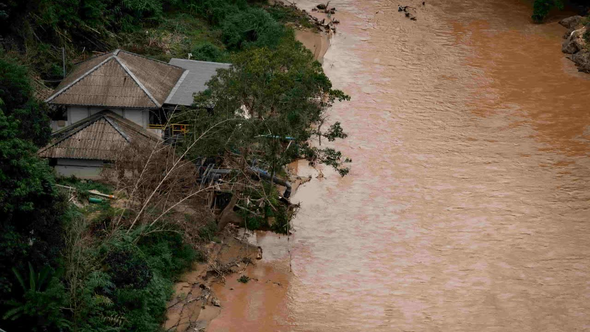

Maquette, pas l'écran. Tout ce que la fiche permet aujourd'hui y est : frise, décision, manques, liste d'avancement, couverture, quand et où, rappels, page publique et QR, les cinq rubriques modifiables sur place, point focal, besoins techniques, présentations, publications, historique, et les états (brouillon, en évaluation, non retenu, en modification, pour le compte de l'organisation, chargement, erreur, introuvable).
Ce qui change. Le bandeau reprend celui d'une activité : photo de l'édition voilée, état et format en pastilles, grand titre condensé, lieu et date, organisation porteuse en tuile blanche ; les vues « Mon dossier » et « Historique » s'y posent. Sous le bandeau, deux cartes remontent de 72 px : la frise (à gauche) et le billet « Quand et où » (à droite, heure en grand, salle, jauge, lien public et QR), suivi de la liste d'avancement. Les rubriques ne sont plus des cartes empilées mais des sections séparées de filets, rangées sous trois étiquettes : « Votre dossier », « Le jour J », « Faire connaître votre activité ».
Réorganisé, à valider. (1) « Votre dossier » vient en premier, avant « Le jour J » et « Faire connaître votre activité » : l'image de couverture et le contenu ne doivent pas être négligés (choix du commanditaire, 04/11). (2) Le calendrier des rappels quitte la carte « Quand et où » pour rejoindre « Le jour J ». (3) Ajout : un bouton « Écrire à l'équipe » dans le billet, qui ouvre l'assistance déjà attachée au dossier. (4) Le nombre d'inscrits (1) n'est pas affiché : décision du 02/11, les organisations ne le voient pas.
Dossier CDP31-00240
Décision rendue le 27 octobre 2026.
Décision rendue le 27 octobre 2026. Motif communiqué : le comité a reçu trois propositions proches sur le numérique et le climat ; il a retenu celle qui associait le plus de pays du Sud.
Le comité évalue votre dossier : il redeviendra modifiable s'il vous demande des corrections.
Ce dossier est clos. Pour proposer à nouveau cette activité, déposez un nouveau dossier.
Ce dossier est un brouillon : terminez-le dans le formulaire de dépôt pour l'envoyer.
Reprendre la rédactionHeures d'Antalya (UTC+3)
Toutes les modifications du dossier, champ par champ, avec leur auteur et leur date. Les notes du comité et les valeurs recalculées n'y figurent pas.
2 nov.14:12
30 oct.16:05
27 oct.10:31
6 oct.09:02
3 oct.18:47
22 sept.11:20
Le contenu n'a pas pu être chargé. Réessayez dans un instant.
Ce dossier n'existe pas, ou il n'appartient pas à l'organisation dont vous suivez les activités.
Revenir à mes dossiers
Elle illustre votre activité sur la plateforme et sert d'aperçu quand on partage le lien.
Nom, rôle, fonction et biographie de chaque personne qui prend la parole.
Spécialiste de programme, IFDD
Spécialiste des politiques climatiques, elle suit pour l'IFDD les négociations sur le transfert de technologies et accompagne les pays francophones dans leurs contributions déterminées au niveau national.
Chercheur en télédétection, Université des sciences, des techniques et des technologies de Bamako
Chercheuse en apprentissage automatique, Montréal
Elle conçoit des modèles de prévision de la qualité de l'eau pour des municipalités du Québec et travaille sur la sobriété énergétique des calculs.
Chef du service climat, ministère de l'Environnement et du Développement durable, Madagascar
Il pilote le système national d'alerte précoce aux crues, qui croise relevés de terrain et prévisions par apprentissage automatique.
Le créneau définitif est fixé par l'IFDD.
La personne que l'équipe de l'IFDD appelle le jour J : retard, salle, matériel. Au moins une.
Par défaut, la personne qui a déposé le dossier, intervenante ou non. Cochez « Point focal sur place » sur un intervenant pour l'ajouter ici, ou ajoutez un collègue.
À signaler avant le 7 novembre 2026 : l'équipe technique s'organise à l'avance.
À signaler avant le 7 novembre 2026 : l'équipe technique s'organise à l'avance.
Les supports projetés pendant l'activité. PowerPoint ou PDF.
Quatre rappels partent avant l'activité, et ils sont cumulés : chaque inscrit les reçoit tous les quatre. Les heures sont données à l'heure d'Antalya (UTC+3).
Collez le lien de chaque publication sur votre activité : l'IFDD la relaie.